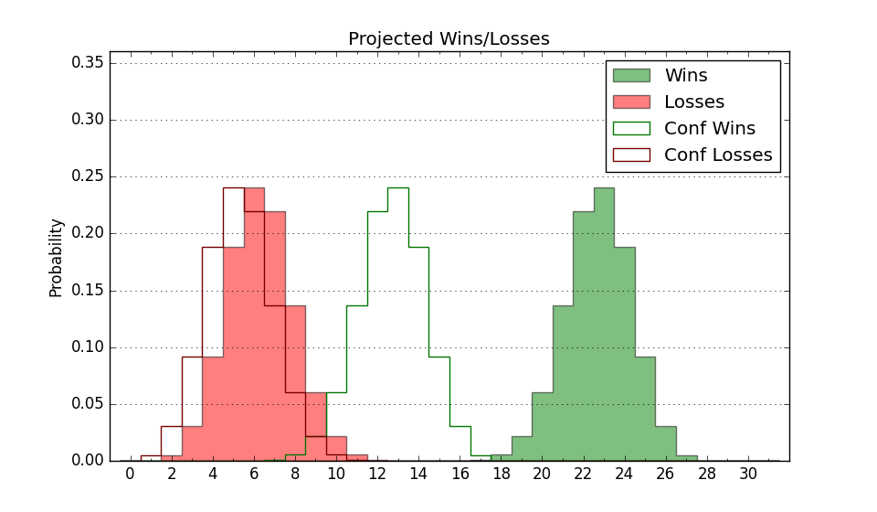

| Home | Game Probabilities | Conferences | Preseason Predictions | Odds Charts | NCAA Tournament |
| City: | Logan, Utah | |
| Conference: | Mountain West (1st)
| |
| Record: | 4-1 (Conf) 14-2 (Overall) | |
| Ratings: | Comp.: 17.4 (40th) Net: 18.4 (37th) Off: 115.7 (28th) Def: 97.3 (61st) SoR: 89.0 (10th) |
| Remaining | ||||||
|---|---|---|---|---|---|---|
| Date | Opponent | Win Prob | Pred. | |||
| 1/20 | Fresno St. (225) | 94.4% | W 82-62 | |||
| 1/27 | @ Boise St. (51) | 39.0% | L 71-74 | |||
| 1/30 | San Jose St. (160) | 90.8% | W 82-66 | |||
| 2/3 | @ San Diego St. (24) | 29.5% | L 70-76 | |||
| 2/6 | Nevada (43) | 66.5% | W 75-70 | |||
| 2/10 | Boise St. (51) | 68.5% | W 75-69 | |||
| 2/14 | @ Wyoming (203) | 80.5% | W 79-69 | |||
| 2/17 | @ Colorado St. (27) | 30.4% | L 73-78 | |||
| 2/20 | San Diego St. (24) | 58.8% | W 74-72 | |||
| 2/27 | @ Fresno St. (225) | 83.2% | W 77-66 | |||
| 3/1 | Air Force (192) | 92.9% | W 76-59 | |||
| 3/6 | @ San Jose St. (160) | 74.3% | W 78-71 | |||
| 3/9 | New Mexico (35) | 63.5% | W 82-78 | |||
| Previous | Game Score | |||||
| Date | Opponent | Win Prob | Result | Off | Def | Net |
| 11/11 | @Bradley (67) | 45.3% | L 66-72 | -18.0 | 14.2 | -3.7 |
| 11/14 | Southern Utah (262) | 95.9% | W 93-84 | 1.5 | -19.5 | -18.0 |
| 11/19 | (N) Marshall (227) | 90.3% | W 83-60 | -0.4 | 11.8 | 11.3 |
| 11/20 | (N) Akron (94) | 69.8% | W 65-62 | -11.2 | 4.6 | -6.6 |
| 11/21 | (N) Stephen F. Austin (148) | 82.8% | W 79-49 | 0.3 | 27.4 | 27.7 |
| 11/28 | @Saint Louis (199) | 80.1% | W 81-76 | 5.1 | -6.0 | -0.9 |
| 12/2 | UC Irvine (70) | 74.7% | W 79-69 | 7.2 | -7.2 | 0.0 |
| 12/6 | San Diego (256) | 95.5% | W 108-81 | 13.3 | -12.6 | 0.7 |
| 12/13 | @Santa Clara (110) | 61.6% | W 84-82 | -6.5 | -5.6 | -12.1 |
| 12/16 | (N) San Francisco (44) | 52.0% | W 54-53 | -24.2 | 26.7 | 2.5 |
| 12/22 | East Tennessee St. (231) | 94.7% | W 80-65 | -7.2 | -0.0 | -7.2 |
| 1/2 | @Air Force (192) | 79.2% | W 88-60 | 25.5 | 3.2 | 28.7 |
| 1/6 | Colorado St. (27) | 59.8% | W 77-72 | -1.5 | 5.8 | 4.3 |
| 1/9 | Wyoming (203) | 93.4% | W 83-59 | 4.5 | 3.1 | 7.6 |
| 1/13 | @UNLV (73) | 49.1% | W 87-86 | 18.3 | -18.0 | 0.3 |
| 1/16 | @New Mexico (35) | 33.8% | L 86-99 | 0.9 | -19.7 | -18.8 |
| Stats & Trends | |||||
|---|---|---|---|---|---|
| Current | Day | Week | Month | Season | |
| Composite | 17.4 | -0.1 | -1.3 | +1.5 | +7.9 |
| Comp Rank | 40 | -1 | -8 | +4 | +35 |
| Net Efficiency | 18.4 | -0.1 | -2.0 | +0.2 | -- |
| Net Rank | 37 | -2 | -10 | +1 | -- |
| Off Efficiency | 115.7 | -0.1 | +0.9 | +2.2 | -- |
| Off Rank | 28 | -1 | +2 | +14 | -- |
| Def Efficiency | 97.3 | -0.0 | -2.9 | -2.1 | -- |
| Def Rank | 61 | +2 | -27 | -13 | -- |
| SoS Rank | 48 | -1 | +43 | +26 | -- |
| Exp. Wins | 22.7 | -0.0 | -0.2 | +1.3 | +6.0 |
| Exp. Conf Wins | 12.7 | -0.0 | -0.2 | +1.2 | +3.3 |
| Conf Champ Prob | 38.8 | -0.1 | +1.3 | +19.8 | +29.2 |

| Advanced Stats | ||
|---|---|---|
| Stat | Value | Rank |
| Off Eff FG % | 0.551 | 40 |
| Off Ast Ratio | 0.179 | 29 |
| Off ORB% | 0.308 | 86 |
| Off TO Rate | 0.128 | 49 |
| Off FT Ratio | 0.381 | 63 |
| Def Eff FG % | 0.477 | 91 |
| Def Ast Ratio | 0.127 | 80 |
| Def ORB% | 0.212 | 11 |
| Def TO Rate | 0.146 | 198 |
| Def FT Ratio | 0.317 | 156 |